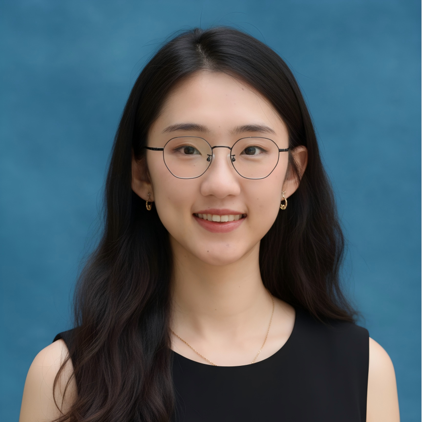
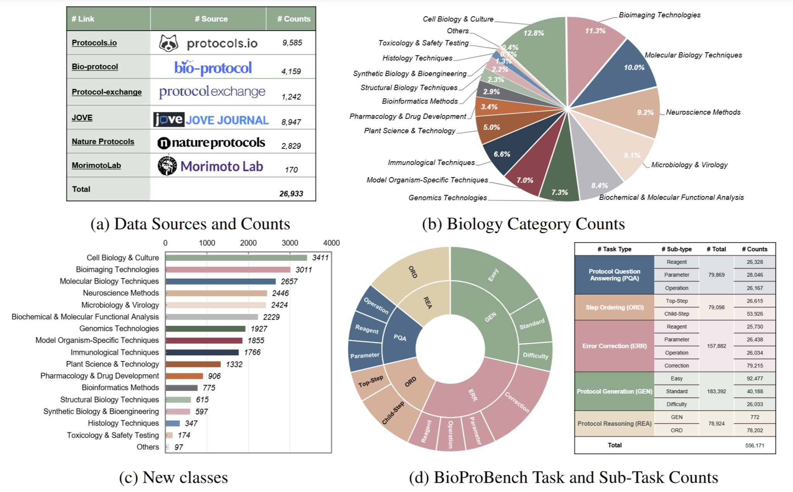
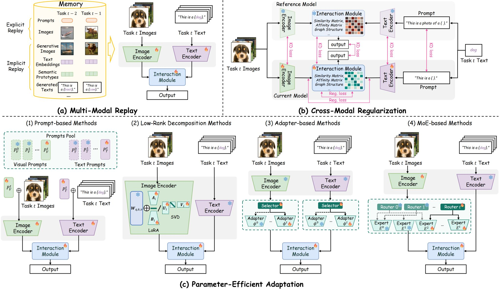

我目前是北京大学深圳研究生院的博雅博士后，（自2024年7月） 导师为田永鸿教授（国家杰出青年科学基金获得者）。
我于2024年6月在中国科学院沈阳自动化研究所（机器人学国家重点实验室）获得博士学位， 导师为丛杨教授（国家杰出青年科学基金获得者）。 2022-2023年，受国家留学基金委（CSC）资助，我在西班牙巴塞罗那自治大学, 国家计算机视觉研究中心（CVC）进行访问学习， 合作导师为Joost van de Weijer教授（2021年全球AI研究者Top 2%）。
Recent preprints, demos, and ongoing projects

首个用于理解和推理生物实验方案的大规模多任务基准测试！🔬📋 ⭐ 27,000 个真实世界实验方案 ⭐ 涵盖 5 个核心任务的 556,000 个结构化实例： • 方案质量保证 (QA) • 步骤排序 • 错误纠正 • 方案生成 • 方案推理 重要意义： 👉 加速开发真正理解实验室流程的逻辑大语言模型 (LLM) 👉 提高自动化工作流程的可重复性和安全性 👉 指导研究人员和行业实现稳健的 AI 驱动型实验设计

🎉 非常激动地与大家分享我们最新的综述论文：《视觉语言模型的持续学习：超越遗忘的综述与分类》！ 随着视觉语言模型（VLM）在多模态任务上取得令人瞩目的成功，一个关键挑战依然存在：它们如何在不灾难性地遗忘先验知识的情况下持续学习？🤔 在这项工作中，我们首次对视觉语言模型的持续学习（VLM-CL）领域进行了重点突出且系统的综述。👏 我们的主要贡献包括： 💡识别三大核心挑战：我们识别了导致 VLM-CL 性能下降的三大核心失效模式：跨模态特征漂移、共享模块干扰和零样本能力衰减。 💡提出一种新的分类体系：我们引入了一种挑战驱动的分类体系，将解决方案与其目标问题进行映射，并将方法归纳为三大范式：多模态回放、跨模态正则化和参数高效自适。 💡提供全面的资源：我们分析了当前的评估协议、数据集和指标，并重点介绍了该领域的未来发展方向。 这项工作旨在为所有开发终身视觉语言系统的研究人员提供全面且具有诊断意义的参考。
完整列表请见 Google Scholar。 * 共同一作，† 通讯作者
International Journal of Computer Vision (IJCV), 2026
AAAI Conference on Artificial Intelligence (AAAI), 2026
International Conference on Computational Linguistics (COLING), 2025
IEEE International Conference on Multimedia and Expo (ICME), 2025
IEEE Transactions on Circuits and Systems for Video Technology, 2023
IEEE Transactions on Neural Networks and Learning Systems, 2023
IEEE Transactions on Circuits and Systems for Video Technology, 2022
IEEE Transactions on Pattern Analysis and Machine Intelligence, 2021
AAAI Conference on Artificial Intelligence, 2021
European Conference on Computer Vision (ECCV), 2020
大模型驱动下科学实验具身智能学习方法研究
面向预训练基础模型的高效持续学习方法研究
AIGC内容篡改检测与定位方法研究
灵巧准确操作技能学习平台验证
中国博士后科学基金会
ICCV 2023 视觉持续学习挑战赛
教育部 & 国家留学基金委
中国科学院大学
全国大学生电子设计竞赛